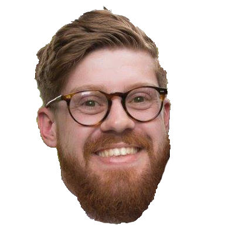
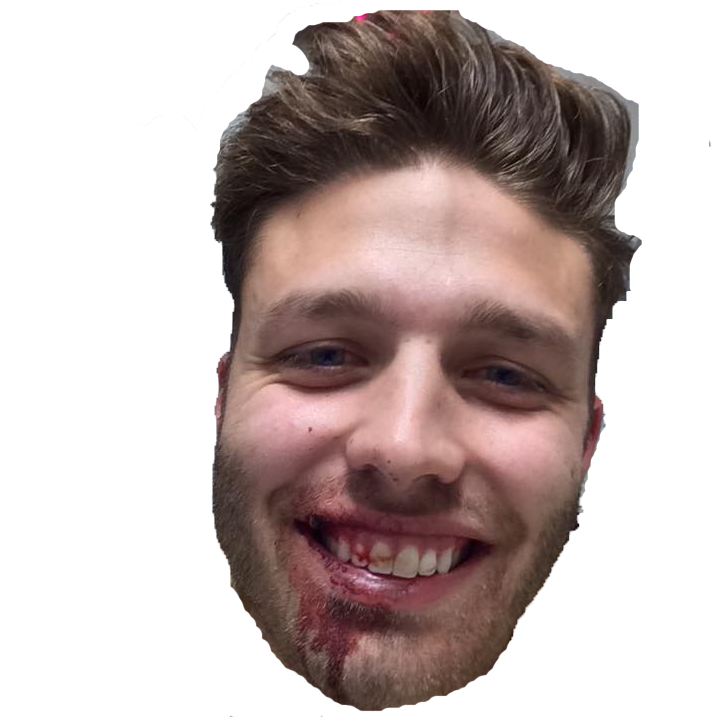
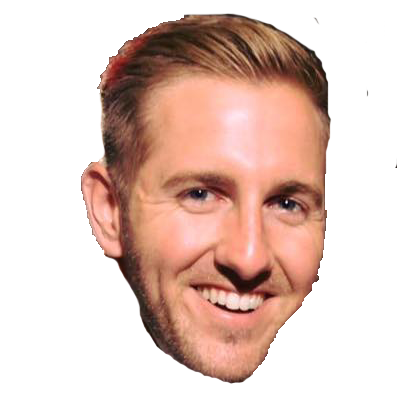
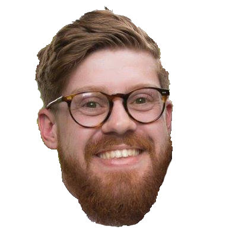
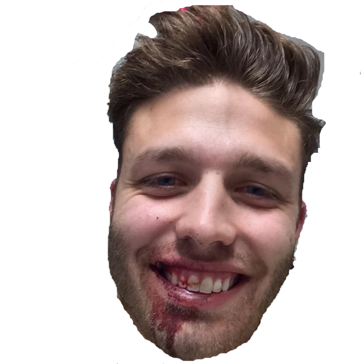
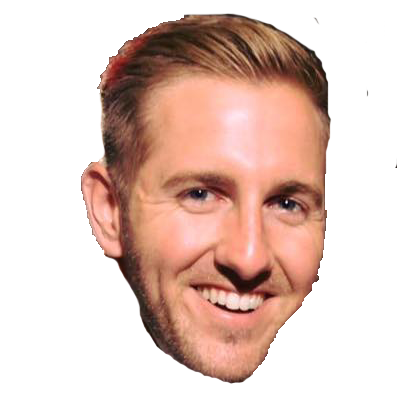

Caleb's Corner:
The good news for Chris and his terribly named team is that they got a victory that will hopefully inspire his team moving forward. The bad news however is a team that doesn’t have the weapons it did a year ago. Rapey Ben, CJ Anderson, Zeke, and Marshall combined for 60 points and well that’s all he would need (honestly, his opponent scored 54.5 points but more on that later). If Chris wants to continue down of the path of repetition he better turn things around quick. His body is getting harder and harder but so is the competition in this league (yes, phrasing). RIP Paul Walker and RIP Dean Sampson. Give the people what they want. Captain Kirk is a champion. Dean is dead.
 




